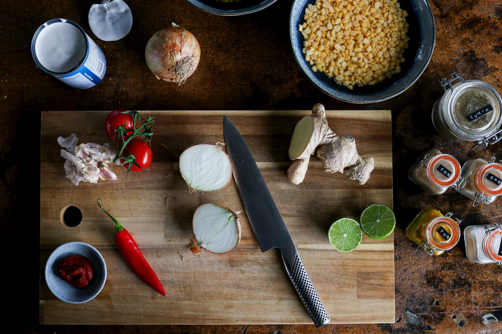
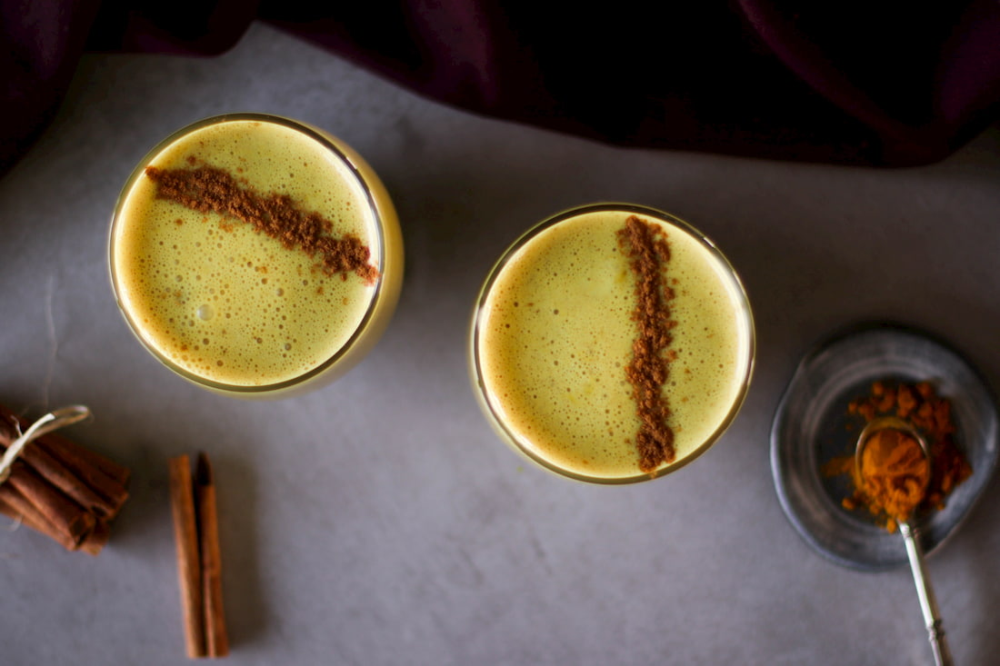

Let us know, which recipes you wanna see from us next!
Spices can also boost the nutrient profile of beverages, such as this golden milk beverage with turmeric!
Anti-oxidant powerhouse turmeric gives this latte its beautiful, vibrant colour. Turmeric gives a subtle, earthy flavour to this drink, which is perfect when paired with sweet, creamy coconut milk.
